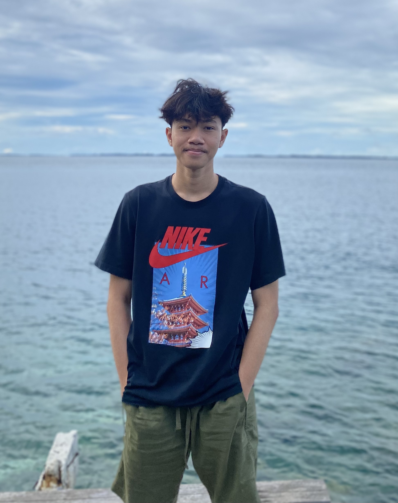

Nizar Fauzi Ramadhan

Summary
I'm 22 years old and live in Indonesia. currently learning about web development. I studied web development because I have an interest in it.
Education
- 2022 - Now (Information System, Open University)
- 2016 - 2019 (Graduated a Mechanical Engineering, Jakarta Vocational High School)
Work Experience
- 2021 - 2022 (Car Assembly - Daihatsu Motor Co,.Ltd)
- Installing the ac frame on the car part with the impact engine.
- Make sure there is no damage to the AC frame parts.
- Keep all machines clean and undamaged
- August - November 2017 (Battery Assembly - Panasonic Gobel Energy Indonesia
- Managing battery production machines according to production operational standards
- Ensure that non-conforming batteries do not pass to the next stage
- Maintain a safe and clean work environment. and always maintain the machine
Skills
Hard Skill
- Adobe Photosop
- Adobe Primier
- Video Editing
Soft Skill
- Time management
- Teamwork
- Adapt quickly
- Work hard
Language
- Bahasa Indonesia
- English
- Japanese
Certifications
- Japanese Language Proficiency Test - N4 (2021)
Contact me